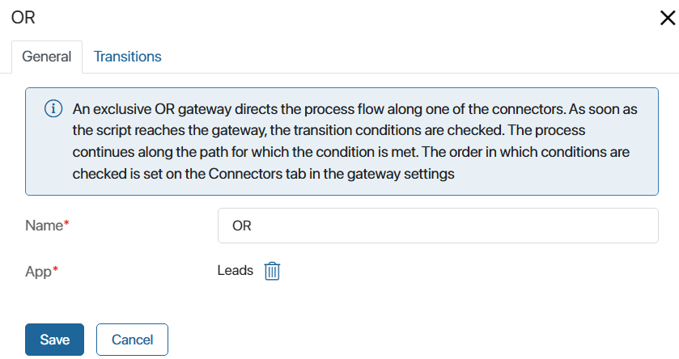
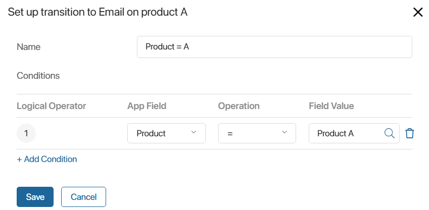
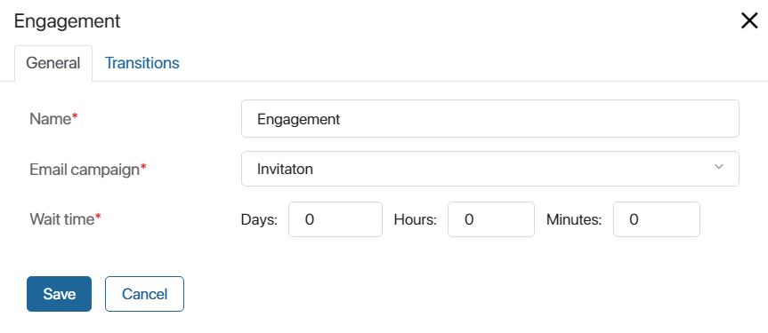
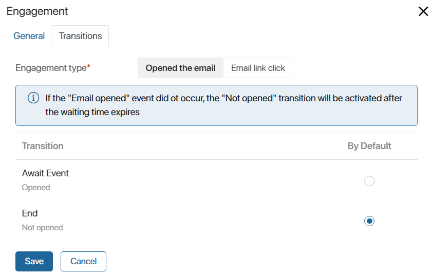
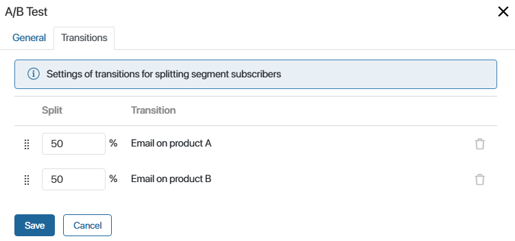

A gateway splits the execution of a customer journey map scenario into several paths for different subscriber groups, depending on the conditions specified in the scenario. You can add OR, Engagement, and A/B Test gateways to the scenario.
OR gateway
This gateway is exclusive and directs the process flow for the subscriber to only one outgoing connector. The connector conditions can be set according to the app item in which the subscriber is specified. If the condition is met, the scenario will continue along the path for which it is set. Any number of outgoing connectors can be configured for the OR gateway.
The gateway settings window consists of two tabs: General and Transitions.
OR gateway. General tab
On this tab, specify the name of the gateway in the scenario and select the app for which you will set transition conditions. You can select the Contacts app or the app set in the first scenario trigger. If the first trigger in the scenario is Contact Inactive, you can only specify the Contacts app.

OR Gateway. Transitions tab
This tab displays a list of all outgoing connectors from the OR gateway you created in the scenario. Set the conditions for each of them, and select the default one. Note that the conditions are checked in the order in which the list of connectors is created. To change the order, drag and drop the transition in the list.
Be sure to specify the default transition. It will continue the scenario if none of the conditions are met.

To set the conditions for the selected transition:
- To the right of the transition name, click Settings.
- In the window that opens, specify the name of the transition and add conditions that will cause the scenario to continue on this connector for the subscriber.

For example, if Product A is specified on the lead’s page, then for the subscriber specified in this lead, the scenario will continue along the transition with the name Product = A and they will receive an email with a promotion on Product A. For more details on an example of such a scenario, refer to the description of the Product newsletters case.
Engagement gateway
This gateway can be placed only after the Email activity. It allows you to configure two outgoing connectors depending on the subscribers’ reaction to the email received as a result of the Email activity. In the gateway settings, you can select one of the following reactions:
- Whether the email has been opened or not.
- Whether the link in the email has been clicked or not.
For example, if the Opened the email option is selected, the gateway will split the scenario execution into two paths: for subscribers who opened the email and for those who did not open it.
You can place other blocks between Email and the subsequent Engagement gateway.
The gateway settings window consists of two tabs: General and Transitions.
Engagement gateway. General tab
Specify the name of the gateway in the scenario here, and select the Email activity for which the reaction to the email will be counted.
You can also define the time to wait for a reaction to the received email. If it expires, the default transition defined on the Transitions tab will be performed. In this case, the reaction to the email will not be recorded.

Engagement Gateway. Transitions tab
Select the reaction to the email that will be considered in the gateway: Opened the email or Email link clicked.
The two outgoing connectors previously added to the scenario will be displayed below. Note that two transitions need to be created from the Engagement gateway.
Define a default transition. It will be executed if the subscriber has not opened the email or clicked on a link in it. For example, it could be a transition to an end event. If a default transition is defined, there will be tooltips below the transition names: Opened or Not opened, Link clicked or Link not clicked.

Let’s look at an example of how the gateway works. You can set up two transitions for subscribers who opened an email with a webinar invitation and those who didn’t. Let’s set a wait time of five days. If the email is not opened within that time, the scenario will end. If the subscriber opens the email, the scenario will move to the Await Event block and then a webinar reminder mailing will be executed. For more details on this example scenario, see the Invitation to a webinar case.
A/B Test gateway
The gateway splits the flow of subscribers randomly into several parts in a specified percentage and directs them to different paths of the scenario. You can add several A/B Test gateways and configure splitting the flow of subscribers into 2–10 branches in each of them.
For example, you want to evaluate two versions of a marketing email and find out which one will be more likely to be opened by subscribers. To do this, use the A/B Test gateway to divide all subscribers into two parts. Each of them will receive a different email version. Then analyze the results of the two newsletters in the Engagement report. For more details, see the A/B Test for an email newsletter case.
To send different emails to two groups of subscribers, after the A/B Test gateway, place the Email activity for sending emails A and B on each path of the scenario. Then configure the gateway:
- On the Main tab, specify the name of the gateway in the scenario.
- On the Transitions tab, specify the percentage ratio for splitting the subscribers into parts.
